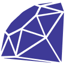

Seja
bem-vindo(a)
ao meu portfólio

Seja
bem-vindo(a)
ao meu portfólio
Sobre mim
Desde pequeno sou fascinado por jogos eletrônicos, e daí, veio minha paixão por computadores.
A capacidade de automatizar uma tarefa e deixá-la mais divertida com a computação, é algo
que me deixa muito empolgado. Por conta disso, comecei a estudar programação e até hoje não
parei.
Já estudei sobre manutenção e redes de computadores durante minha formação técnica e outros cursos menores.
Atualmente, sou graduando em engenharia da computação, pela Universidade Federal do Ceará, e estudando internet
das coisas de forma autodidata, entre outras áreas.
Projetos
Enquanto estudante e desenvolvedor, participei do desenvolvimento de alguns projetos de sites
e sistemas web. Abaixo apresento a descrição de alguns cases.
Outros projetos podem ser vistos na minha conta no GitHub: @kevendasilva.
Formação
Aprendi durante meus vários anos como estudante, que a vida demanda aprendizado contínuo.
Por isso, busco sempre conhecer novas áreas e tecnologias. Atualmente, estou aprofundando
meus estudos no desenvolvimento de sistemas distribuídos, principalmente de forma autodidata.
A seguir, apresento as minhas principais formações.
Tecnologias
Abaixo apresento as principais tecnologias com as quais eu já trabalhei, bem como algumas tecnologias que estou estudando, como JavaScript e TypeScript.
